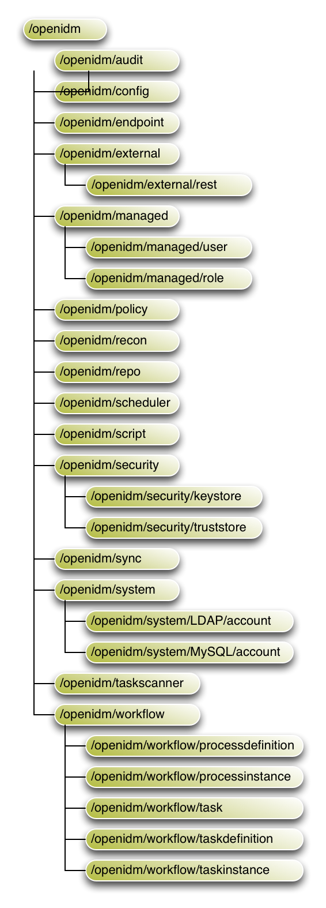

One of the core services of OpenIDM is synchronizing identity data from different resources. This chapter explains what you must know to get started configuring OpenIDM's flexible synchronization mechanism, and illustrates the concepts with examples.
Synchronization happens either when OpenIDM receives a change directly, or when OpenIDM discovers a change on an external resource.
For direct changes to OpenIDM, OpenIDM immediately pushes updates to all external resources configured to receive the updates. A direct change can originate not only as a write request through the REST interface, but also as an update resulting from reconciliation with another resource.
OpenIDM discovers and synchronizes changes from external resources through reconciliation and LiveSync.
In contrast, OpenIDM synchronizes changes from internal resources to external targets using automatic sync.
In identity management, reconciliation is the process of bidirectional synchronization of objects between different data stores. Reconciliation applies mainly to user objects, although OpenIDM can reconcile any objects, including groups and roles.
To perform reconciliation, OpenIDM analyzes both source and target systems to uncover the differences that it must reconcile. Reconciliation can therefore be a heavyweight process. When working with large data sets, finding all changes can be more work than processing the changes.
Reconciliation is, however, thorough. It recognizes system error conditions and catches changes that might be missed by the more lightweight LiveSync mechanism. Reconciliation therefore serves as the basis for compliance and reporting functionality.
LiveSync captures the changes that occur on a remote system, then pushes those changes to OpenIDM. OpenIDM uses the defined mappings to replay the changes where they are required - either in the OpenIDM repository, or on another remote system, or both. Unlike reconciliation, LiveSync uses a polling system, and is intended to react quickly to changes as they happen.
To perform this polling, LiveSync relies on a change detection mechanism
on the external resource to determine which objects have changed. The
change detection mechanism is specific to the external resource, and can
be a time stamp, a sequence number, a change vector or other any method of
recording changes that have occurred on the system. For example, OpenDJ
implements a change log that provides OpenIDM with a list of objects that
have changed since the last request. Active Directory implements a change
sequence number, and certain databases might have a
lastChange attribute.
Automatic sync automatically pushes changes made in the OpenIDM internal repository to external systems.
In other words, automatic sync pushes data in the opposite direction to LiveSync. The section that follows describes additional features that can be included with automatic sync.
To determine what to synchronize, and how to carry out synchronization,
OpenIDM relies on mappings configured in the
/path/to/conf/sync.json file. LiveSync and automatic sync
rely on the mappings configured once per OpenIDM server.
For reconciliation or LiveSync, you can schedule changes as described in Scheduling Tasks and Events.
When automatic sync is used to push a large number of changes to external databases, that process takes time. Problems such as lost connections could happen, resulting in partial synchronization.
For example, if a Human Resources manager adds a group of new employees in one database, a partial synchronization may mean that some of those employees do not have access to their email or other systems.
Automatic sync assumes that the external data sources include all data currently in the internal OpenIDM repository. If that does not reflect your configuration, you should start either with an initial reconciliation, or with LiveSync as described in the Installation Guide, Sample 6 - LiveSync with an AD Server.
An example of automatic sync is depicted in the OpenIDM Installation Guide,
Sample 5b - Compensated
Synchronization with onSync. That
sample demonstrates how OpenIDM compensates for the failure of an external
resource.
OpenIDM includes an optional onSync hook, which you
can include in the /path/to/conf/managed.json file.
A sample excerpt is shown here:
...
"onDelete" : {
"type" : "text/javascript",
"file" : "ui/onDelete-user-cleanup.js"
},
"onSync" : {
"type" : "text/javascript",
"file" : "compensate.js"
},
"properties" : [
...
Note the reference from onSync to
compensate.js. You can find that file in the
/path/to/openidm/bin/defaults/script directory.
When a change to a user is made, either in the UI or through a REST call, a change is made to the managed object for that user.
The automatic sync feature of OpenIDM attempts to synchronize the change
(and any other pending changes) to the external data store(s). The
automatic sync process is configured in the associated
sync.json configuration file.
Look at the contents of the sync.json file. It might
start with source and target mappings similar to:
...
"mappings" : [
{
"name" : "managedUser_systemAdAccounts",
"source" : "managed/user",
"target" : "system/ad/account",
...
Based on this excerpt, automatic synchronization takes information from the
internal OpenIDM managed user data store, and synchronizes that information
to the AD data store. Once complete, it proceeds down the file to the
next source and target to be
synchronized.
The compensate.js script is designed to avoid
partial synchronization. If synchronization proceeds to completion, OpenIDM
exits from the script, based on some of the first active entries in the file:
if (syncResults.success) {
logger.debug("sync was a success; no compensation necessary");
return;
}
If synchronization does not complete, OpenIDM proceeds through the
remainder of the compensate.js script, with warning
messages related to the sync action (notifyCreate, notifyUpdate,
notifyDelete, along with the error that caused the sync failure,
which should be available in the standard OpenIDM log file.
Without the compensate.js script, any issues with
connections to an external resource can lead to data stores that are
out of sync, such as the example cited earlier where some new employees
do not have access to their corporate email accounts.
With the compensate.js script, any such errors will
result in each data store using the information it had before
automatic synchronization started. OpenIDM stores that information,
temporarily, in properties such as oldObject and
oldTarget.
In this particular example, human resource managers should see that new employees are not shown in their database. Then, the administrators of the OpenIDM system can check log files for errors, address them, and then restart automatic synchronization with a new REST call.
Identity management software tends to favor either a meta-directory data model, where all data are mirrored in a central repository, or a virtual data model, where only a minimum set of attributes are stored centrally, and most are loaded on demand from the external resources in which they are stored. The meta-directory model offers fast access at the risk of getting outdated data. The virtual model guarantees fresh data, but pays for that guarantee in terms of performance.
OpenIDM leaves the data model choice up to you. You determine the right trade offs for a particular deployment. OpenIDM does not hard code any particular schema or set of attributes stored in the repository. Instead, you define how external system objects map onto managed objects, and OpenIDM dynamically updates the repository to store the managed object attributes that you configure.
You can, for example, choose to follow the data model defined in the Simple Cloud Identity Management (SCIM) specification. The following object represents a SCIM user.
{
"userName": "james1",
"familyName": "Berg",
"givenName": "James",
"email": [
"james1@example.com"
],
"description": "Created by OpenIDM REST.",
"password": "asdfkj23",
"displayName": "James Berg",
"phoneNumber": "12345",
"employeeNumber": "12345",
"userType": "Contractor",
"title": "Vice President",
"active": true
}
Avoid using the dash character ( - ) in property names,
like last-name, as dashes in names make JavaScript syntax
more complex. If you cannot avoid the dash, then write
source['last-name'] instead of
source.last-name in your JavaScript.
Data flow for synchronization involves the following elements:
Connector configuration files
(conf/provisioner-*.json), with one file per external
resource.
Synchronization mappings file
(conf/sync.json), with one file per OpenIDM instance.
A links table that OpenIDM maintains in its repository.
The scripts required to check objects and manipulate attributes.
Connector configuration files map external resource objects to OpenIDM
objects, and are described in detail in the chapter on Connecting to
External Resources. Connector configuration files are
named openidm/conf/provisioner.,
where resource-name.jsonresource-name reflects the connector
technology and external resource, such as
openicf-xml.
An excerpt from an example connector configuration follows. The
example shows the name for the connector and two attributes of an account
object type. In the attribute mapping definitions, the attribute name is
mapped from the nativeName, the attribute name used on
the external resource, to the attribute name used in OpenIDM. Thus the
example shows that the sn attribute in LDAP is mapped to
lastName in OpenIDM. The homePhone
attribute can have multiple values.
{
"name": "MyLDAP",
"objectTypes": {
"account": {
"lastName": {
"type": "string",
"required": true,
"nativeName": "sn",
"nativeType": "string"
},
"homePhone": {
"type": "array",
"items": {
"type": "string",
"nativeType": "string"
},
"nativeName": "homePhone",
"nativeType": "string"
}
}
}
}In order for OpenIDM to access external resource objects and attributes, the object and its attributes must match the connector configuration. Note that the connector file only maps external resource objects to OpenIDM objects. To construct attributes and to manipulate their values, you use the synchronization mappings file.
The synchronization mappings file (openidm/conf/sync.json)
represents the core configuration for OpenIDM synchronization.
The sync.json file describes a set of mappings.
Each mapping specifies how attributes from source objects correspond to
attributes on target objects. The source and target indicate the direction
for the data flow, so you must define a separate mapping for each data
flow. For example, if you want data flows from an LDAP server to the
repository and also from the repository to the LDAP server, you must
define two separate mappings.
You identify external resource sources and targets as
system/, where
name/object-typename is the name used in the connector
configuration file, and object-type is the
object defined in the connector configuration file list of object types.
For objects in OpenIDM's internal repository, you use
managed/, where
object-typeobject-type is defined in
openidm/conf/managed.json. The name for the mapping
by convention is set to a string of the form
source_target
{
"mappings": [
{
"name": "systemLdapAccounts_managedUser",
"source": "system/MyLDAP/account",
"target": "managed/user",
"properties": [
{
"target": "sn",
"source": "lastName"
},
{
"target": "telephoneNumber",
"source": "homePhone"
},
{
"target": "phoneExtension",
"default": "0047"
},
{
"target": "mail",
"comment": "Set mail if non-empty.",
"source": "email",
"condition": {
"type": "text/javascript",
"source": "(object.email != null)"
}
},
{
"target": "displayName",
"source": "",
"transform": {
"type": "text/javascript",
"source": "source.lastName +', ' + source.firstName;"
}
}
]
}
]
}In this example, the source is the external resource,
MyLDAP, and the target is OpenIDM's repository,
specifically the managed user objects. The properties
reflect OpenIDM attribute names. For example, the mapping has the
attribute lastName defined in the
MyLDAP connector configuration file mapped to
sn in the OpenIDM managed user object. Notice
that the attribute names come from the connector configuration, rather
than the external resource itself.
You can create attributes on the target as part of the mapping. In
the preceding example, a phoneExtension attribute with
a default value of 0047 is created on the target. The
"default" property can also be used to specify the
value to assign to the target property if the "source"
property and the "transform" script yield a null value.
If no value is specified, the default value is null.
You can also set up conditions under which OpenIDM maps attributes
as shown for the email attribute in the example. By default, OpenIDM
synchronizes all attributes. In the example, the mail attribute is set
only if the script for the condition returns true.
OpenIDM also enables you to transform attributes. In the example,
the value of the displayName attribute is set using a
combination of the lastName and
firstName attribute values from the source. For
transformations, the source property is optional.
However, the source object is only available when you specify the
source property. Therefore, in order to use
source.lastName and source.firstName
to calculate the displayName, the example specifies
"source" : "".
To add a flow from the repository to MyLDAP,
you would define a mapping with source managed/user
and target system/MyLDAP/account, named for example
managedUser_systemLdapAccounts.
The following image shows the paths to objects in the OpenIDM namespace.
|  |
OpenIDM stores managed objects in the repository, and exposes
them under /openidm/managed. System objects on
external resources are exposed under
/openidm/system.
By default, OpenIDM synchronizes all objects that match those defined in
the connector configuration for the resource. Many connectors allow you
to limit the scope of objects that the connector accesses. For example,
the LDAP connector allows you to specify base DNs and LDAP filters so
that you do not need to access every entry in the directory. OpenIDM also
allows you to filter what is considered a valid source or valid target
for synchronization by using scripts. To apply these filters, use the
validSource, and validTarget
properties in your mapping.
A script that determines if a source object is valid to be
mapped. The script yields a boolean value: true
indicates that the source object is valid; false
can be used to defer mapping until some condition is met. In the root
scope, the source object is provided in the "source"
property. If the script is not specified, then all source objects are
considered valid.
{
"validSource": {
"type": "text/javascript",
"source": "source.ldapPassword != null"
}
}
A script, used during reconciliation's second phase, that
determines if a target object is valid to be mapped. The script yields
a boolean value: true indicates that the target
object is valid; false indicates that the target
object should not be included in reconciliation. In the root scope, the
source object is provided in the "target" property.
If the script is not specified, then all target objects are considered
valid for mapping.
{
"validTarget": {
"type": "text/javascript",
"source": "target.employeeType == 'internal'"
}
}
During synchronization, your scripts always have access to a
source object and a target object.
Examples already shown in this section use source. to retrieve attributes from the
source objects. Your scripts can also write to target attributes using
attributeNametarget.
syntax.attributeName
{
"onUpdate": {
"type": "text/javascript",
"source": "if (source.email != null) {target.mail = source.email;}"
}
}See the Scripting Reference appendix for more on scripting.
By default, all mappings participate in automatic synchronization
operations. You can prevent a specific mapping from participating in
automatic synchronization by setting the "enableSync"
property of that mapping to false. In the following example, automatic
synchronization is disabled. This means that changes to objects in the internal
repository are not automatically propagated to the LDAP directory. To
propagate changes to the LDAP directory, reconciliation must be launched
manually.
{
"mappings" : [
{
"name" : "managedUser_systemLdapAccounts",
"source" : "managed/user",
"target" : "system/ldap/account",
"enableSync" : false,
....
}
Note that if enableSync is set to false
for a system to managed user mapping (for example
"systemLdapAccounts_managedUser"), LiveSync is disabled
for that mapping.
If a source resource is empty, the default behavior is for a reconciliation operation to exit, without failure, and to log a warning, similar to the following:
2014-03-20 10:41:18:918 WARN Cannot perform reconciliation with an empty source
object set, unless explicitly configured to allow it.
The reconciliation summary is also logged in the reconciliation audit log.
This behavior prevents reconciliation operations from accidentally deleting everything in a target resource. For example, in the event that a source system is unavailable but erroneously reporting its status as "up", the absence of source objects should not result in objects being removed on the target resource.
There might be situations in which you do want reconciliations of an empty
source resource to proceed. In this case, you can override the default
behavior by setting the "allowEmptySourceSet" property to
true in the mapping. For example:
{
"mappings" : [
{
"name" : "systemXmlfileAccounts_managedUser",
"source" : "system/xmlfile/account",
"allowEmptySourceSet" : true,
...
Reconciliation of an empty source effectively wipes out the target.
You can update mappings in the synchronization configuration file
(sync.json) while the server is running, provided you
do not update a mapping that is currently in use by a reconciliation
process.
OpenIDM supports reversible encryption of attribute values for managed objects. Attribute values to encrypt include passwords, authentication questions, credit card numbers, and social security numbers. If passwords are already encrypted on the external resource, they are generally excluded from the synchronization process. For more information, see Managing Passwords.
You configure encryption in the managed object configuration (in the
openidm/conf/managed.json file). The following extract
of that file shows a managed object configuration that encrypts and decrypts
securityAnswer, ssn, and
password attributes using the default symmetric
key, and additional scripts for extra passwords.
{
"objects": [
{
"name": "user",
...
"properties": [
{
"name": "securityAnswer",
"encryption": {
"key": "openidm-sym-default"
}
},
{
"name": "ssn",
"encryption": {
"key": "openidm-sym-default"
}
},
{
"name": "password",
"encryption": {
"key": "openidm-sym-default"
}
}
],
...
}
]
}Do not use the default symmetric key,
openidm-sym-default, in production. See the chapter on
Securing
and Hardening OpenIDM for instructions on adding your
own symmetric key.
You can protect specific sensitive data stored in the repository by marking the corresponding properties as "private". Private data, whether it is encrypted or not, is not accessible over the REST interface. Properties that are marked as private are removed from an object when that object is retrieved over REST.
To mark a property as private, set its "scope" to
"private" in the conf/managed.json
file.
The following extract of the managed.json file
shows how HTTP access is prevented on the password and
securityAnswer properties.
"properties" : [
{
"name" : "securityAnswer",
"encryption" : {
"key" : "openidm-sym-default"
},
"scope" : "private"
},
{
"name" : "password",
"encryption" : {
"key" : "openidm-sym-default"
},
"scope" : "private"
A potential caveat with using private properties is that such
properties are removed if an object is updated by
using an HTTP PUT request. A PUT
request replaces the entire object in the repository. Because properties
that are marked as private are ignored in HTTP requests, these properties
are effectively removed from the object when the update is done. To work
around this limitation, do not use PUT requests if you
have configured private properties. Instead, use a PATCH
request to update only those properties that need to be changed.
For example, to update the givenName of user jdoe,
you could run the following command:
$ curl \
--cacert self-signed.crt \
--header "X-OpenIDM-Username: openidm-admin" \
--header "X-OpenIDM-Password: openidm-admin" \
--header "Content-Type: application/json" \
--request POST \
--data '[
{
"operation":"replace",
"field":"/givenName",
"value":"Jon"
}
]' \
"https://localhost:8443/openidm/managed/user?_action=patch&_queryId=for-userName&uid=jdoe"
The filtering of private data applies only to direct HTTP read and query calls on managed objects. No automatic filtering is done for internal callers, and the data that these callers choose to expose.
OpenIDM enables you to construct and manipulate attributes using scripts that are triggered when an object is created (onCreate), updated (onUpdate), retrieved (onRetrieve), or deleted (onDelete). Additional scripts are available when a managed object requires validation (onValidate), and when an object is about to be stored in the repository (onStore). Similar scripts are available for when a link is created (onLink) or removed (onUnlink).
The following example derives a DN for an LDAP entry when the entry is created in the internal repository.
{
"onCreate": {
"type": "text/javascript",
"source":
"target.dn = 'uid=' + source.uid + ',ou=people,dc=example,dc=com'"
}
}In addition, OpenIDM supports the use of post-action scripts, including after the creation of an object is complete (postCreate), after the update of an object is complete (postUpdate), and after the deletion of an object (postDelete).
When two mappings exist to synchronize the same objects bidirectionally,
you can use the links property in one mapping to have
OpenIDM use the same internally managed link for both mappings. Otherwise,
if no links property is specified, OpenIDM maintains a
link for each mapping.
The following excerpt shows two mappings, one from MyLDAP accounts
to managed users, and another from managed users to MyLDAP accounts. In
the second mapping, the link property tells OpenIDM
to reuse the links created in the first mapping, rather than create new
links.
{
"mappings": [
{
"name": "systemMyLDAPAccounts_managedUser",
"source": "system/MyLDAP/account",
"target": "managed/user"
},
{
"name": "managedUser_systemMyLDAPAccounts",
"source": "managed/user",
"target": "system/MyLDAP/account",
"links": "systemMyLDAPAccounts_managedUser"
}
]
}
You can trigger, cancel, and monitor reconciliation operations over REST,
using the REST endpoint
https://localhost:8443/openidm/recon.
The following example triggers a reconciliation operation based on the
systemLdapAccounts_managedUser mapping. The mapping is
defined in the file conf/sync.json.
$ curl \ --cacert self-signed.crt \ --header "X-OpenIDM-Username: openidm-admin" \ --header "X-OpenIDM-Password: openidm-admin" \ --header "Content-Type: application/json" \ --request POST \ "https://localhost:8443/openidm/recon?_action=recon&mapping=systemLdapAccounts_managedUser"
By default, an assigned reconciliation run ID is returned immediately when the reconciliation operation is initiated. Clients can make subsequent calls to the reconciliation service, using this reconciliation run ID to query its state and to call operations on it.
For example, the reconciliation run initiated previously would return something similar to the following:
{"_id":"0890ad62-4738-4a3f-8b8e-f3c83bbf212e"}
To have the entire reconciliation run complete before the reconciliation
run ID is returned, set the waitForCompletion property to
true when the reconciliation is initiated. For example:
$ curl \ --cacert self-signed.crt \ --header "X-OpenIDM-Username: openidm-admin" \ --header "X-OpenIDM-Password: openidm-admin" \ --header "Content-Type: application/json" \ --request POST \ "https://localhost:8443/openidm/recon?_action=recon&mapping=systemLdapAccounts_managedUser&waitForCompletion=true"
You can display the details of a particular reconciliation run over REST by specifying the reconciliation run ID in the URL. For example, the following call shows the details of the reconciliation run initiated in the previous section:
$ curl \
--cacert self-signed.crt \
--header "X-OpenIDM-Username: openidm-admin" \
--header "X-OpenIDM-Password: openidm-admin" \
--request GET \
"https://localhost:8443/openidm/recon/0890ad62-4738-4a3f-8b8e-f3c83bbf212e"
{
"ended": "2014-03-06T07:00:32.094Z",
"_id": "7a07c100-4f11-4d7e-bf8e-fa4594f99d58",
"mapping": "systemLdapAccounts_managedUser",
"state": "SUCCESS",
"stage": "COMPLETED_SUCCESS",
"stageDescription": "reconciliation completed.",
"progress": {
"links": {
"created": 0,
"existing": {
"total": "1",
"processed": 1
}
},
"target": {
"created": 0,
"existing": {
"total": "3",
"processed": 3
}
},
"source": {
"existing": {
"total": "1",
"processed": 1
}
}
},
"situationSummary": {
"UNASSIGNED": 2,
"TARGET_IGNORED": 0,
"SOURCE_IGNORED": 0,
"MISSING": 0,
"FOUND": 0,
"AMBIGUOUS": 0,
"UNQUALIFIED": 0,
"CONFIRMED": 1,
"SOURCE_MISSING": 0,
"ABSENT": 0
},
"started": "2014-03-06T07:00:31.907Z"
}
You can cancel a reconciliation run by sending a REST call with the
cancel action, specifying the reconciliation run ID. For
example, the following call cancels the reconciliation run initiated in the
previous section:
$ curl \ --cacert self-signed.crt \ --header "X-OpenIDM-Username: openidm-admin" \ --header "X-OpenIDM-Password: openidm-admin" \ --header "Content-Type: application/json" \ --request POST \ "https://localhost:8443/openidm/recon/0890ad62-4738-4a3f-8b8e-f3c83bbf212e?_action=cancel"
The output for a reconciliation cancellation request is similar to the following:
{
"status":"SUCCESS",
"action":"cancel",
"_id":"0890ad62-4738-4a3f-8b8e-f3c83bbf212e"
}If you specified that the call should wait for completion before the ID is returned, you can obtain the reconciliation run ID from the list of active reconciliations, as described in the following section.
You can display a list of reconciliation processes that have completed, and
those that are in progress, by running a RESTful GET on
"https://localhost:8443/openidm/recon". The following
example displays all reconciliation runs.
$ curl \
--cacert self-signed.crt \
--header "X-OpenIDM-Username: openidm-admin" \
--header "X-OpenIDM-Password: openidm-admin" \
--request GET \
"https://localhost:8443/openidm/recon"
The output of such a request is similar to the following, with one item for each reconciliation run.
{
"reconciliations": [
{
"ended": "2014-03-06T06:14:11.845Z",
"_id": "4286510e-986a-4521-bfa4-8cd1e039a7f5",
"mapping": "systemLdapAccounts_managedUser",
"state": "SUCCESS",
"stage": "COMPLETED_SUCCESS",
"stageDescription": "reconciliation completed.",
"progress": {
"links": {
"created": 1,
"existing": {
"total": "0",
"processed": 0
}
},
"target": {
"created": 1,
"existing": {
"total": "2",
"processed": 2
}
},
"source": {
"existing": {
"total": "1",
"processed": 1
}
}
},
"situationSummary": {
"UNASSIGNED": 2,
"TARGET_IGNORED": 0,
"SOURCE_IGNORED": 0,
"MISSING": 0,
"FOUND": 0,
"AMBIGUOUS": 0,
"UNQUALIFIED": 0,
"CONFIRMED": 0,
"SOURCE_MISSING": 0,
"ABSENT": 1
},
"started": "2014-03-06T06:14:04.722Z"
},
]
}Each reconciliation run has the following properties:
_idThe ID of the reconciliation run.
mapping
The name of the mapping, defined in the conf/sync.json
file.
stateThe high level state of the reconciliation run. Values can be as follows:
ACTIVE
The reconciliation run is in progress.
CANCELED
The reconciliation run was successfully canceled.
FAILED
The reconciliation run was terminated because of failure.
SUCCESS
The reconciliation run completed successfully.
stageThe current stage of the reconciliation run's progress. Values can be as follows:
ACTIVE_INITIALIZED
The initial stage, when a reconciliation run is first created.
ACTIVE_QUERY_ENTRIES
Querying the source, target and possibly link sets to reconcile.
ACTIVE_RECONCILING_SOURCE
Reconciling the set of IDs retrieved from the mapping source.
ACTIVE_RECONCILING_TARGET
Reconciling any remaining entries from the set of IDs retrieved from the mapping target, that were not matched or processed during the source phase.
ACTIVE_LINK_CLEANUP
Checking whether any links are now unused and should be cleaned up.
ACTIVE_PROCESSING_RESULTS
Post-processing of reconciliation results.
ACTIVE_CANCELING
Attempting to abort a reconciliation run in progress.
COMPLETED_SUCCESS
Successfully completed processing the reconciliation run.
COMPLETED_CANCELED
Completed processing because the reconciliation run was aborted.
COMPLETED_FAILED
Completed processing because of a failure.
stageDescriptionA description of the stages described previously.
progressThe progress object has the following structure (annotated here with comments):
"progress":{
"source":{ // Progress on set of existing entries in the mapping source
"existing":{
"processed":1001,
"total":"1001" // Total number of entries in source set, if known, “?” otherwise
}
},
"target":{ // Progress on set of existing entries in the mapping target
"existing":{
"processed":1001,
"total":"1001" // Total number of entries in target set, if known, “?” otherwise
},
"created":0 // New entries that were created
},
"links":{ // Progress on set of existing links between source and target
"existing":{
"processed":1001,
"total":"1001" // Total number of existing links, if known, “?” otherwise
},
"created":0 // Denotes new links that were created
}
},
The ability to trigger LiveSync operations over REST, or by using the resource API, enables you to use an external scheduler to trigger a LiveSync operation, rather than using the OpenIDM scheduling mechanism.
There are two ways in which to trigger a LiveSync operation over REST.
Use the _action=liveSync parameter directly on the
resource. This is the recommended method. The following example calls a
LiveSync operation on the user accounts in an external LDAP system.
$ curl \ --cacert self-signed.crt \ --header "X-OpenIDM-Username: openidm-admin" \ --header "X-OpenIDM-Password: openidm-admin" \ --header "Content-Type: application/json" \ --request POST \ "https://localhost:8443/openidm/system/ldap/account?_action=liveSync"
Target the system endpoint and supply a
source parameter to identify the object that should be
synchronized. This method matches the scheduler configuration and can
therefore be used to test schedules before they are implemented.
The following example calls the same LiveSync operation as the previous example.
$ curl \ --cacert self-signed.crt \ --header "X-OpenIDM-Username: openidm-admin" \ --header "X-OpenIDM-Password: openidm-admin" \ --header "Content-Type: application/json" \ --request POST \ "https://localhost:8443/openidm/system?_action=liveSync&source=system/ldap/account"
A successful LiveSync operation returns the following response:
{
"_rev": "4",
"_id": "SYSTEMLDAPACCOUNT",
"connectorData": {
"nativeType": "integer",
"syncToken": 1
}
}Do not run two identical LiveSync operations simultaneously - rather, ensure that the first operation has completed before a second similar operation is launched.
To troubleshoot a LiveSync operation that has not succeeded, you can include
an optional parameter (detailedFailure) to return
additional information. For example:
$ curl \ --cacert self-signed.crt \ --header "X-OpenIDM-Username: openidm-admin" \ --header "X-OpenIDM-Password: openidm-admin" \ --header "Content-Type: application/json" \ --request POST \ "https://localhost:8443/openidm/system/ldap/account?_action=liveSync&detailedFailure=true"
The first time that a LiveSync operation is called, no synchronization token exists in the database to establish which changes have already been processed. The default LiveSync behavior is to locate the last existing entry in the change log, and to store that entry in the database as the current starting position from which changes should be applied. This behavior prevents LiveSync from processing changes that might already have been processed during an initial data load. Subsequent LiveSync operations will pick up and process any new changes.
Typically, in setting up LiveSync on a new system, you would load the data initially (by using reconciliation, for example) and then enable LiveSync, starting from that base point.
Every reconciliation operation performs a query on the source, and on the
target resource, to determine which records should be reconciled. The default
source and target queries are query-all-ids, which means
that all records in both the source and the target are considered candidates
for that reconciliation operation.
You can restrict reconciliation to specific entries by defining explicit source or target queries in the mapping configuration.
For example, to restrict reconciliation to only those records whose
employeeType on the source resource is
Permanent, you might specify a source query as follows:
"mappings" : [
{
"name" : "managedUser_systemLdapAccounts",
"source" : "managed/user",
"target" : "system/ldap/account",
"sourceQuery" : : {
"queryFilter" : "employeeType eq \"Permanent\""
},
...
The format of the query can be any query type that is supported by the resource, and can include additional parameters, if applicable. OpenIDM 3.0.0 supports the following query types.
For queries on managed objects:
_queryId for arbitrary predefined, parameterized
queries
_queryExpression for client-supplied queries, in native
query format
For queries on system objects:
_queryId=query-all-ids (the only supported predefined
query)
_queryFilter for arbitrary filters, in common filter
notation
The source and target queries send the query to the resource that is defined
for that source or target, by default. You can override the resource to which
the query is sent by specifying a resourceName in the
query. For example, to query a specific endpoint instead of the source
resource, you might modify the preceding source query as follows:
"mappings" : [
{
"name" : "managedUser_systemLdapAccounts",
"source" : "managed/user",
"target" : "system/ldap/account",
"sourceQuery" : {
"resourceName" : "endpoint/scriptedQuery"
"queryFilter" : "employeeType eq \"Permanent\""
},
...
To override a source or target query that is defined in the mapping, you can specify the query when you call the reconciliation operation. For example, if you wanted to reconcile all employee entries, and not just the permanent employees, you would run the reconciliation operation as follows:
$ curl \
--cacert self-signed.crt \
--header "X-OpenIDM-Username: openidm-admin" \
--header "X-OpenIDM-Password: openidm-admin" \
--header "Content-Type: application/json" \
--request POST \
--data '{"sourceQuery": {"_queryId" : "query-all-ids"}}' \
"https://localhost:8443/openidm/recon?_action=recon&mapping=managedUser_systemLdapAccounts"
By default, a reconciliation operation runs both the source and target phase,
that is both the source and the target resources are queried. To specify that
either the source or target resource is not queried, set
runSourcePhase or runTargetPhase to
false in the mapping configuration
(conf/sync.json file). For example, to prevent the
target resource from being queried during the reconciliation operation
configured in the previous example, you would amend the mapping configuration
as follows:
{
"mappings" : [
{
"name" : "systemLdapAccounts_managedUser",
"source" : "system/ldap/account",
"target" : "managed/user",
"sourceQuery" : {
"queryFilter" : "employeeType eq \"Permanent\""
},
"runTargetPhase" : false,
...
In the same way that you can restrict reconciliation operations to specific records by using queries, you can specify an ID to restrict a reconciliation operation to a particular record.
To restrict reconciliation to a specific ID, use the
reconById action, instead of the recon
action when you call the reconciliation operation. Specify the ID with the
ids parameter. Currently reconciling more than one ID with
the reconById action is not supported.
The following example is based on the data from Sample 2b, which maps an
LDAP server with the OpenIDM repository. The example reconciles only the user
bjensen, using the
managedUser_systemLdapAccounts mapping to update the user
account in LDAP with the data from the OpenIDM repository. The
_id for bjensen in this example is
b3c2f414-e7b3-46aa-8ce6-f4ab1e89288c.
The example assumes that automatic synchronization has been disabled and that
a reconciliation operation is required to copy changes made in the repository
to the LDAP system.
$ curl \ --cacert self-signed.crt \ --header "X-OpenIDM-Username: openidm-admin" \ --header "X-OpenIDM-Password: openidm-admin" \ --header "Content-Type: application/json" \ --request POST \ "https://localhost:8443/openidm/recon?_action=reconById&mapping=managedUser_systemLdapAccounts&ids=b3c2f414-e7b3-46aa-8ce6-f4ab1e89288c"
A reconciliation by ID takes the default reconciliation options that are specified in the mapping, so the source and target queries, and source and target phases described in the previous section apply equally to reconciliation by ID.
Reconciliation operations are logged in the file
/path/to/openidm/audit/recon.csv and in the
repository. You can read and query the reconciliation audit logs over the
REST interface, as outlined in the following examples.
By default all audit/recon query responses are formatted
based on the entryType of the entry. Fields that are not
required for the specific entry type are stripped away from the response.
For example, a summary entry would not need to include a
null targetObjectId field, as this would not add
information to a summary. You can specify that this auto-formatting be
disabled and return the full entry for all entry types. To disable entry
formatting, include formatted=false as a query parameter
in the request.
To return all reconciliation operations logged in the audit log, run a
RESTful GET on the audit/recon endpoint. For example:
$ curl \ --cacert self-signed.crt \ --header "X-OpenIDM-Username: openidm-admin" \ --header "X-OpenIDM-Password: openidm-admin" \ --request GET \ "https://localhost:8443/openidm/audit/recon"
The following code sample shows an extract of the audit log after the first reconciliation operation in Sample 1.
{
"entries": [
{
"rootActionId": "d0578abf-f38e-4ede-a7dc-5ee9eaa8ce53",
"messageDetail": null,
"message": "Reconciliation initiated by openidm-admin",
"timestamp": "2013-05-08T07:58:33.296Z",
"reconId": "5cf09dfa-e85c-4d52-ab6c-8ba7c2e3d34f",
"entryType": "start",
"_id": "11381e20-3679-469d-a71c-c557c2bd091e",
"status": "SUCCESS",
"exception": "",
"mapping": "systemXmlfileAccounts_managedUser"
},
{
"messageDetail": null,
"rootActionId": "d0578abf-f38e-4ede-a7dc-5ee9eaa8ce53",
"situation": "ABSENT",
"actionId": "86995423-8a43-4fc7-9c3c-9e450e0234cb",
"targetObjectId": "managed/user/scarter",
"action": "CREATE",
"entryType": "",
"_id": "9f59bb8a-31c6-41af-8f27-02094391ba0c",
"reconId": "5cf09dfa-e85c-4d52-ab6c-8ba7c2e3d34f",
"status": "SUCCESS",
"exception": "",
"reconciling": "source",
"ambiguousTargetObjectIds": "",
"timestamp": "2013-05-08T07:58:33.791Z",
"message": null,
"sourceObjectId": "system/xmlfile/account/scarter"
},
{
"messageDetail": null,
"rootActionId": "d0578abf-f38e-4ede-a7dc-5ee9eaa8ce53",
"situation": "ABSENT",
"actionId": "dea9b5c5-7a75-4cab-b8e4-176bea0a94a6",
"targetObjectId": "managed/user/bjensen",
"action": "CREATE",
"entryType": "",
"_id": "4fd285ef-a409-4875-abd0-5d70965fe172",
"reconId": "5cf09dfa-e85c-4d52-ab6c-8ba7c2e3d34f",
"status": "SUCCESS",
"exception": "",
"reconciling": "source",
"ambiguousTargetObjectIds": "",
"timestamp": "2013-05-08T07:58:33.793Z",
"message": null,
"sourceObjectId": "system/xmlfile/account/bjensen"
},
{
"rootActionId": "d0578abf-f38e-4ede-a7dc-5ee9eaa8ce53",
"messageDetail": {
"ended": "2013-05-08T07:58:33.813Z",
"started": "2013-05-08T07:58:33.294Z",
"situationSummary": {
"SOURCE_MISSING": 0,
"FOUND": 0,
"SOURCE_IGNORED": 0,
"UNQUALIFIED": 0,
"UNASSIGNED": 0,
"TARGET_IGNORED": 0,
"CONFIRMED": 0,
"AMBIGUOUS": 0,
"ABSENT": 2,
"MISSING": 0
},
"progress": {
"links": {
"created": 2,
"existing": {
"total": "0",
"processed": 0
}
},
"target": {
"created": 2,
"existing": {
"total": "0",
"processed": 0
}
},
"source": {
"existing": {
"total": "2",
"processed": 2
}
}
},
"stageDescription": "reconciling target entries",
"stage": "ACTIVE_RECONCILING_TARGET",
"state": "ACTIVE",
"mapping": "systemXmlfileAccounts_managedUser"
},
"message": "SOURCE_IGNORED: 0 MISSING: 0 FOUND: 0 AMBIGUOUS: 0 UNQUALIFIED: 0
CONFIRMED: 0 SOURCE_MISSING: 0 ABSENT: 2 TARGET_IGNORED: 0 UNASSIGNED: 0 ",
"timestamp": "2013-05-08T07:58:33.813Z",
"reconId": "5cf09dfa-e85c-4d52-ab6c-8ba7c2e3d34f",
"entryType": "summary",
"_id": "a8a81f9f-fa8f-49f4-a0d6-c88b5fc4be2a",
"status": "SUCCESS",
"exception": "",
"mapping": "systemXmlfileAccounts_managedUser"
}
]
}
Most of the fields in this audit log are self-explanatory. Each distinct
reconciliation operation is identified by its reconId.
Each entry in the log is identified by a unique _id. The
first log entry indicates the status for the complete reconciliation
operation. Successive entries indicate the status for each record affected
by the reconciliation.
To obtain information on a specific audit log entry, include its entry
_id in the URL. For example:
$ curl \ --cacert self-signed.crt \ --header "X-OpenIDM-Username: openidm-admin" \ --header "X-OpenIDM-Password: openidm-admin" \ --request GET \ "https://localhost:8443/openidm/audit/recon/9f59bb8a-31c6-41af-8f27-02094391ba0c"
The following sample output shows the results of a read operation on a specific reconciliation audit entry.
{
"targetObjectId": "managed/user/5b9b75e8-2667-4040-a50d-7a644922f072",
"sourceObjectId": "system/ldap/account/uid=jdoe,ou=People,dc=example,dc=com",
"situation": "CONFIRMED",
"reconciling": "source",
"ambiguousTargetObjectIds": "",
"action": "UPDATE",
"actionId": "a0c8ea66-8798-451d-a55c-9d4b95f0941e",
"exception": "",
"_id": "88802a56-8be9-43bf-aaf9-d861820f3e39",
"entryType": "",
"timestamp": "2014-03-06T06:59:14.637Z",
"reconId": "a0c8ea66-8798-451d-a55c-9d4b95f0941e",
"rootActionId": "a0c8ea66-8798-451d-a55c-9d4b95f0941e",
"status": "SUCCESS",
"message": null,
"messageDetail": null
}
To query the audit log for a particular reconciliation operation, use the
audit-by-recon-id keyword, specifying the reconciliation
ID, as follows:
$ curl \ --cacert self-signed.crt \ --header "X-OpenIDM-Username: openidm-admin" \ --header "X-OpenIDM-Password: openidm-admin" \ --request GET \ "https://localhost:8443/openidm/audit/recon?_queryId=audit-by-recon-id&reconId=<reconID>"
Output similar to the following is returned, for the specified reconciliation operation:
{
"remainingPagedResults": -1,
"pagedResultsCookie": null,
"resultCount": 5,
"result": [
{
"mapping": "systemLdapAccounts_managedUser",
"exception": "",
"_id": "e8932aef-31ad-43e8-ab5a-c997b247ab9d",
"entryType": "summary",
"timestamp": "2014-03-06T06:59:14.691Z",
"reconId": "a0c8ea66-8798-451d-a55c-9d4b95f0941e",
"rootActionId": "a0c8ea66-8798-451d-a55c-9d4b95f0941e",
"status": "SUCCESS",
"message": "SOURCE_IGNORED: 0 MISSING: 0 FOUND: 0 AMBIGUOUS: 0 UNQUALIFIED: 0
CONFIRMED: 1 SOURCE_MISSING: 0 ABSENT: 0 TARGET_IGNORED: 0 UNASSIGNED: 2 ",
"messageDetail": {
"stage": "ACTIVE_RECONCILING_TARGET",
"stageDescription": "reconciling target entries",
"ended": "2014-03-06T06:59:14.691Z",
"started": "2014-03-06T06:59:14.353Z",
"mapping": "systemLdapAccounts_managedUser",
"state": "ACTIVE",
"situationSummary": {
"SOURCE_MISSING": 0,
"FOUND": 0,
"SOURCE_IGNORED": 0,
"UNQUALIFIED": 0,
"UNASSIGNED": 2,
"TARGET_IGNORED": 0,
"CONFIRMED": 1,
"AMBIGUOUS": 0,
"ABSENT": 0,
"MISSING": 0
},
"progress": {
"links": {
"created": 0,
"existing": {
"processed": 1,
"total": "1"
}
},
"source": {
"existing": {
"processed": 1,
"total": "1"
}
},
"target": {
"created": 0,
"existing": {
"processed": 3,
"total": "3"
}
}
}
}
},
{
"targetObjectId": "managed/user/e8b93d84-5295-4286-b951-cea07550a331",
"sourceObjectId": null,
"situation": "UNASSIGNED",
"reconciling": "target",
"ambiguousTargetObjectIds": null,
"action": "IGNORE",
"actionId": null,
"exception": "",
"_id": "7878e924-0aa6-46a9-8d42-716eae098121",
"entryType": "",
"timestamp": "2014-03-06T06:59:14.674Z",
"reconId": "a0c8ea66-8798-451d-a55c-9d4b95f0941e",
"rootActionId": "a0c8ea66-8798-451d-a55c-9d4b95f0941e",
"status": "SUCCESS",
"message": null,
"messageDetail": null
},
{
"targetObjectId": "managed/user/0e4cfe5e-3d9d-4d74-acf4-596f610eda5a",
"sourceObjectId": null,
"situation": "UNASSIGNED",
"reconciling": "target",
"ambiguousTargetObjectIds": null,
"action": "IGNORE",
"actionId": null,
"exception": "",
"_id": "795d1616-9ec7-44c7-80f5-bc7c566bd2fe",
"entryType": "",
"timestamp": "2014-03-06T06:59:14.653Z",
"reconId": "a0c8ea66-8798-451d-a55c-9d4b95f0941e",
"rootActionId": "a0c8ea66-8798-451d-a55c-9d4b95f0941e",
"status": "SUCCESS",
"message": null,
"messageDetail": null
},
{
"targetObjectId": "managed/user/5b9b75e8-2667-4040-a50d-7a644922f072",
"sourceObjectId": "system/ldap/account/uid=jdoe,ou=People,dc=example,dc=com",
"situation": "CONFIRMED",
"reconciling": "source",
"ambiguousTargetObjectIds": "",
"action": "UPDATE",
"actionId": "a0c8ea66-8798-451d-a55c-9d4b95f0941e",
"exception": "",
"_id": "88802a56-8be9-43bf-aaf9-d861820f3e39",
"entryType": "",
"timestamp": "2014-03-06T06:59:14.637Z",
"reconId": "a0c8ea66-8798-451d-a55c-9d4b95f0941e",
"rootActionId": "a0c8ea66-8798-451d-a55c-9d4b95f0941e",
"status": "SUCCESS",
"message": null,
"messageDetail": null
},
{
"mapping": "systemLdapAccounts_managedUser",
"exception": "",
"_id": "91c00e7f-1975-4f68-bfba-7740e8f05ec5",
"entryType": "start",
"timestamp": "2014-03-06T06:59:14.354Z",
"reconId": "a0c8ea66-8798-451d-a55c-9d4b95f0941e",
"rootActionId": "a0c8ea66-8798-451d-a55c-9d4b95f0941e",
"status": "SUCCESS",
"message": "Reconciliation initiated by openidm-admin",
"messageDetail": null
}
]
}
To query the audit log for a specific reconciliation situation, use the
audit-by-recon-id-situation keyword, specifying the
reconciliation ID and the situation that you want to query. For example,
the following query returns all ABSENT records found during the specified
reconciliation operation:
$ curl \
--cacert self-signed.crt \
--header "X-OpenIDM-Username: openidm-admin" \
--header "X-OpenIDM-Password: openidm-admin" \
--request GET \
"https://localhost:8443/openidm/audit/recon?_queryId=audit-by-recon-id-situation&situation=ABSENT&reconId=fd2a59df-1fcd-444d-97ca-2c8a7ec6dc6c"
Output similar to the following is returned, with one entry for each record that matches the situation queried:
{
"result": [
{
"messageDetail": null,
"rootActionId": "3c098d6f-a5e5-483c-a8ce-82911a10b0a9",
"situation": "ABSENT",
"actionId": "1a391fe8-201b-4f59-ad05-92ee804488a8",
"targetObjectId": "managed/user/scarter",
"action": "CREATE",
"entryType": "",
"_id": "6dc0a18a-826d-487d-a29f-5cd8d2f55465",
"reconId": "1ef8e7b6-33dc-4f92-810a-b51913508a68",
"status": "SUCCESS",
"exception": "",
"reconciling": "source",
"ambiguousTargetObjectIds": "",
"timestamp": "2013-05-14T08:20:41.763Z",
"message": null,
"sourceObjectId": "system/xmlfile/account/scarter"
},
{
"messageDetail": null,
"rootActionId": "3c098d6f-a5e5-483c-a8ce-82911a10b0a9",
"situation": "ABSENT",
"actionId": "0aaba292-1dd3-4e98-a0e2-04bec9ae5209",
"targetObjectId": "managed/user/bjensen",
"action": "CREATE",
"entryType": "",
"_id": "1cda457e-54e2-451b-8a40-ef93dec7e60c",
"reconId": "1ef8e7b6-33dc-4f92-810a-b51913508a68",
"status": "SUCCESS",
"exception": "",
"reconciling": "source",
"ambiguousTargetObjectIds": "",
"timestamp": "2013-05-14T08:20:41.760Z",
"message": null,
"sourceObjectId": "system/xmlfile/account/bjensen"
}
]
} The activity logs track all operations on internal (managed) and external (system) objects. Entries in the activity log contain identifiers for the reconciliation or synchronization action that triggered the activity, and for the original caller and the relationships between related actions.
You can access the activity logs over REST with the following call:
$ curl \ --cacert self-signed.crt \ --header "X-OpenIDM-Username: openidm-admin" \ --header "X-OpenIDM-Password: openidm-admin" \ --request GET \ "https://localhost:8443/openidm/audit/activity"
The following extract of the activity log shows the last entry in the log, which was a password change for user bjensen.
{
"entries": [
...
},
"before": null,
"requester": "openidm-admin",
"parentActionId": "c2c102bc-7b32-4020-b5aa-9a7d63652cb6",
"_id": "bbaff1e0-923b-48f0-b053-b1614cbb3647",
"activityId": "c2c102bc-7b32-4020-b5aa-9a7d63652cb6",
"timestamp": "2014-03-13T16:20:54.811Z",
"action": "CREATE",
"message": "create",
"objectId": "managed/user/4f2f5eea-918a-4ef1-9244-be41dcf128a4",
"rev": "1",
"rootActionId": "c2c102bc-7b32-4020-b5aa-9a7d63652cb6"
},
{
"passwordChanged": true,
"changedFields": [
"/password"
],
"status": "SUCCESS",
"after": {
"securityAnswer": {
"$crypto": {
"value": {
"key": "openidm-sym-default",
"iv": "8CvlA6rWN03MAhLSKJmbvw==",
"cipher": "AES/CBC/PKCS5Padding",
"data": "oJBTrrX+wFAygFZkLuGPrhB/jAIICcdIBuCX1eEbpS0="
},
"type": "x-simple-encryption"
}
},
...
To return activity information for a specific action, include the
_id of the action in the endpoint, for example:
$ curl \ --cacert self-signed.crt \ --header "X-OpenIDM-Username: openidm-admin" \ --header "X-OpenIDM-Password: openidm-admin" \ --request GET \ "https://localhost:8443/openidm/audit/activity/22ef6d20-bd84-4267-9db8-745825a46ad1"
Results similar to the following are returned:
{
"passwordChanged": true,
"changedFields": [
"/password"
],
"status": "SUCCESS",
"after": {
"securityAnswer": {
"$crypto": {
"value": {
"key": "openidm-sym-default",
"iv": "HpsyTtTXc2pfNrXlYbro7Q==",
"cipher": "AES/CBC/PKCS5Padding",
"data": "0M6O7geNjalJ7e0EGSG9B90eaeF8zJuogdL74hcAIRg="
},
"type": "x-simple-encryption"
}
},
"userName": "bjensen@example.com",
"stateProvince": "",
"postalAddress": "",
"effectiveAssignments": {},
"roles": "openidm-authorized",
"telephoneNumber": "1234567",
"accountStatus": "active",
"password": {
"$crypto": {
"value": {
"key": "openidm-sym-default",
"iv": "dkRjURz761HaObBuLl+EkA==",
"cipher": "AES/CBC/PKCS5Padding",
"data": "9chNPUlXotHy195ERj6vlg=="
},
"type": "x-simple-encryption"
}
},
"effectiveRoles": [
"openidm-authorized"
],
"givenName": "Barbara",
"lastPasswordAttempt": "Thu Mar 13 2014 07:23:12 GMT-0800 (GMT-08:00)",
"address2": "",
"passwordAttempts": "0",
"sn": "Jensen",
"mail": "bjensen@example.com",
"securityQuestion": "1",
"city": "",
"country": "",
"_rev": "7",
"lastPasswordSet": "",
"postalCode": "",
"_id": "bjensen",
"description": "Created By XML1"
},
"before": {
"securityAnswer": "Some security answer",
"userName": "bjensen@example.com",
"stateProvince": "",
"postalAddress": "",
"roles": "openidm-authorized",
"telephoneNumber": "1234567",
"password": {
"$crypto": {
"value": {
"key": "openidm-sym-default",
"iv": "bqhRyLW1lI+KZROcpgyukg==",
"cipher": "AES/CBC/PKCS5Padding",
"data": "qO8A76GqNqftVVwOlasyPw=="
},
"type": "x-simple-encryption",
"securityQuestion": "1",
"givenName": "Barbara",
"address2": "",
"lastPasswordAttempt": "Thu Mar 13 2014 07:23:12 GMT-0800 (GMT-08:00)",
"passwordAttempts": "0",
"sn": "Jensen",
"mail": "bjensen@example.com",
"country": "",
"city": "",
"_rev": "7",
"lastPasswordSet": "",
"postalCode": "",
"_id": "bjensen",
"description": "Created By XML1",
"accountStatus": "active"
},
"requester": "openidm-admin",
"parentActionId": "71ddeed8-9006-4578-b869-13e15a3ce6b5",
"_id": "ee88adb8-3329-4f81-a8f2-d9c8e0fbf72b",
"activityId": "71ddeed8-9006-4578-b869-13e15a3ce6b5",
"timestamp": "2014-03-13T16:21:27.086Z",
"action": "UPDATE",
"message": "update",
"objectId": "managed/user/bjensen",
"rev": "7",
"rootActionId": "71ddeed8-9006-4578-b869-13e15a3ce6b5"
}
Each action in the activity log has a rootActionId and a
parentActionId. The rootActionId is
the ID that was assigned to the incoming or initiating request. The
parentActionId is the ID that is associated with the
overall action. So, for example, if an HTTP request invokes a script that
changes a user's password, the HTTP request is assigned the
rootActionId and the action taken by the script is
assigned the parentActionId. You can query the activity
log for the details of a specific action by including the
parentActionId in the query. For example:
$ curl \ --cacert self-signed.crt \ --header "X-OpenIDM-Username: openidm-admin" \ --header "X-OpenIDM-Password: openidm-admin" \ --request GET \ "https://localhost:8443/openidm/audit/activity?_queryId=audit-by-activity-parent-action&parentActionId=0aaba292-1dd3-4e98-a0e2-04bec9ae5209"
The following sample output shows the result of a query that requests details of the password change for bjensen.
{
"remainingPagedResults": -1,
"pagedResultsCookie": null,
"resultCount": 2,
"result": [
{
"rootActionId": "71ddeed8-9006-4578-b869-13e15a3ce6b5",
"changedFields": [
"/password"
],
"action": "UPDATE",
"objectId": "managed/user/bjensen",
"before": {
"securityAnswer": "Some security answer",
"userName": "bjensen@example.com",
"stateProvince": "",
"postalAddress": "",
"roles": "openidm-authorized",
"telephoneNumber": "1234567",
"password": "CAngetin1",
"securityQuestion": "1",
"givenName": "Barbara",
"address2": "",
"lastPasswordAttempt": "Thu Mar 13 2014 07:23:12 GMT-0800 (GMT-08:00)",
"passwordAttempts": "0",
"sn": "Jensen",
"mail": "bjensen@example.com",
"country": "",
"city": "",
"_rev": "7",
"lastPasswordSet": "",
"postalCode": "",
"_id": "bjensen",
"description": "Created By XML1",
"accountStatus": "active"
},
"status": "SUCCESS",
"_rev": "1",
"_id": "ee88adb8-3329-4f81-a8f2-d9c8e0fbf72b",
"parentActionId": "71ddeed8-9006-4578-b869-13e15a3ce6b5",
"timestamp": "2014-03-13T16:21:27.086Z",
"message": "update",
"activityId": "71ddeed8-9006-4578-b869-13e15a3ce6b5",
"after": {
"securityAnswer": {
"$crypto": {
"value": {
"key": "openidm-sym-default",
"iv": "HpsyTtTXc2pfNrXlYbro7Q==",
"cipher": "AES/CBC/PKCS5Padding",
"data": "0M6O7geNjalJ7e0EGSG9B90eaeF8zJuogdL74hcAIRg="
},
"type": "x-simple-encryption"
}
},
"userName": "bjensen@example.com",
"stateProvince": "",
"postalAddress": "",
"effectiveAssignments": {},
"roles": "openidm-authorized",
"telephoneNumber": "1234567",
"accountStatus": "active",
"password": {
"$crypto": {
"value": {
"key": "openidm-sym-default",
"iv": "dkRjURz761HaObBuLl+EkA==",
"cipher": "AES/CBC/PKCS5Padding",
"data": "9chNPUlXotHy195ERj6vlg=="
},
"type": "x-simple-encryption"
}
},
"effectiveRoles": [
"openidm-authorized"
],
"givenName": "Barbara",
"lastPasswordAttempt": "Thu Mar 13 2014 07:23:12 GMT-0800 (GMT-08:00)",
"address2": "",
"passwordAttempts": "0",
"sn": "Jensen",
"mail": "bjensen@example.com",
"securityQuestion": "1",
"city": "",
"country": "",
"_rev": "7",
"lastPasswordSet": "",
"postalCode": "",
"_id": "bjensen",
"description": "Created By XML1"
},
"rev": "7",
"requester": "openidm-admin",
"passwordChanged": true
}
]
}For audit logs in the repository, you can define custom queries using the parameterized query mechanism. For more information, see the section on Parameterized Queries.
For more information about the entries in these logs, see the chapter that covers Using Audit Logs.
OpenIDM enables you to specify what should happen if a LiveSync operation reports a failure for an operation. By configuring the LiveSync retry policy, you can specify how many times a failed modification should be reattempted and what should happen in the event that the modification is unsuccessful after the specified number of attempts. If no retry policy is configured, OpenIDM reattempts the change an infinite number of times, until the change is successful. This behavior can increase data consistency in the case of transient failures (for example, when the connection to the database is temporarily lost). However, in situations where the cause of the failure is permanent (for example, if the change does not meet certain policy requirements) the change will never succeed, regardless of the number of attempts. In this case, the infinite retry behavior can effectively block subsequent LiveSync operations from starting.
Generally, a scheduled reconciliation operation will eventually force consistency. However, to prevent repeated retries that block the LiveSync mechanism, you should restrict the number of times OpenIDM reattempts the same modification. You can then specify what OpenIDM does with failed LiveSync changes. The failed modification can be stored in a "dead letter queue", discarded, or reapplied. Alternatively, an administrator can be notified of the failure by email or by some other means. This behavior can be scripted. The default configuration, in the samples provided with OpenIDM, is to retry a failed modification five times, and then to log and ignore the failure.
The LiveSync retry policy is configured in the connector configuration file
(provisioner.openicf-*.json). The sample connector
configuration files have a retry policy defined as follows:
"syncFailureHandler" : {
"maxRetries" : 5,
"postRetryAction" : "logged-ignore"
},
The maxRetries field specifies the number of attempts
that OpenIDM should make to process the failed modification. The value of
this property must be a positive integer, or -1. A value
of zero indicates that failed modifications should not be reattempted. In
this case, the post retry action is executed immediately when a LiveSync
operation fails. A value of -1 (or omitting the
maxRetries property, or the entire
syncFailureHandler from the configuration) indicates that
failed modifications should be retried an infinite number of times. In this
case, no post retry action is executed.
The default retry policy relies on the scheduler, or whatever invokes the LiveSync operation. Therefore, if retries are enabled and a LiveSync modification fails, OpenIDM will retry the modification the next time that LiveSync is invoked.
The postRetryAction field indicates what action OpenIDM
should take in the event that the maximum number of retries has been reached
(or if maxRetries has been set to zero). The post retry
action can be one of the following:
logged-ignore indicates that OpenIDM should ignore the
failed modification, and log its occurrence.
dead-letter-queue indicates that OpenIDM should save
the details of the failed modification in a table in the repository
(accessible over REST at
repo/synchronisation/deadLetterQueue/).
provisioner-name
script specifies a custom script that should be
executed when the maximum number of retries has been reached. For
information about using custom scripts in the configuration, see the
Scripting
Reference.
In addition to the regular objects described in the Scripting Reference, the following objects are available in the script scope:
syncFailure
Provides details about the failed record. The structure of the
syncFailure object is as follows:
"syncFailure" :
{
"token" : the ID of the token,
"systemIdentifier" : a string identifier that matches the "name" property in
provisioner.openicf.json,
"objectType" : the object type being synced, one of the keys in the
"objectTypes" property in provisioner.openicf.json,
"uid" : the UID of the object (for example uid=joe,ou=People,dc=example,dc=com),
"failedRecord", the record that failed to synchronize
},
To access these fields, include
syncFailure. in
your script.
fieldname
failureCause
Provides the exception that caused the original LiveSync failure.
failureHandlers
OpenIDM currently provides two synchronization failure handlers "out of
the box". loggedIgnore indicates that the failure
should be logged, after which no further action should be taken.
deadLetterQueue indicates that the failed record
should be written to a specific table in the repository, where further
action can be taken. To invoke one of the internal failure handlers from
your script, use a call similar to the following (shown here for
JavaScript):
failureHandlers.deadLetterQueue.invoke(syncFailure, failureCause);
Two sample scripts are provided in
path/to/openidm/samples/syncfailure/script, one that
logs failures, and one that sends them to the dead letter queue in the
repository.
The following sample provisioner configuration file extract shows a LiveSync retry policy that specifies a maximum of four retries before the failed modification is sent to the dead letter queue.
...
"connectorName" : "org.identityconnectors.ldap.LdapConnector"
},
"syncFailureHandler" : {
"maxRetries" : 4,
"postRetryAction" : dead-letter-queue
},
"poolConfigOption" : {
...
In the case of a failed modification, a message similar to the following is output to the log file:
INFO: sync retries = 1/4, retrying
OpenIDM reattempts the modification, the specified number of times. If the modification is still unsuccessful, a message similar to the following is logged:
INFO: sync retries = 4/4, retries exhausted
Jul 19, 2013 11:59:30 AM
org.forgerock.openidm.provisioner.openicf.syncfailure.DeadLetterQueueHandler invoke
INFO: uid=jdoe,ou=people,dc=example,dc=com saved to dead letter queue
The log message indicates the entry for which the modification failed
(uid=jdoe, in this example).
You can view the failed modification in the dead letter queue, over the REST interface, as follows:
$ curl \
--cacert self-signed.crt \
--header "X-OpenIDM-Username: openidm-admin" \
--header "X-OpenIDM-Password: openidm-admin" \
--request GET \
"https://localhost:8443/openidm/repo/synchronisation/deadLetterQueue/ldap?_queryId=query-all-ids"
{
"query-time-ms": 2,
"result":
[
{
"_id": "4",
"_rev": "0"
}
],
"conversion-time-ms": 0
}To view the details of a specific failed modification, include its ID in the URL:
$ curl \
--cacert self-signed.crt \
--header "X-OpenIDM-Username: openidm-admin" \
--header "X-OpenIDM-Password: openidm-admin" \
--request GET \
"https://localhost:8443/openidm/repo/synchronisation/deadLetterQueue/ldap/4"
{
"objectType": "account",
"systemIdentifier": "ldap",
"failureCause": "org.forgerock.openidm.sync.SynchronizationException:
org.forgerock.openidm.objset.ConflictException:
org.forgerock.openidm.sync.SynchronizationException:
org.forgerock.openidm.script.ScriptException:
ReferenceError: \"bad\" is not defined.
(PropertyMapping/mappings/0/properties/3/condition#1)",
"token": 4,
"failedRecord": "complete record, in xml format"
"uid": "uid=jdoe,ou=people,dc=example,dc=com",
"_rev": "0",
"_id": "4"
}
During synchronization, OpenIDM categorizes objects according to their
situation. Situations are characterized by whether an
object exists on a source or target system, whether OpenIDM has registered a
link between the source object and the target object, and whether the object
is considered valid, as assessed by the
validSource and validTarget scripts.
OpenIDM then takes a specific action, depending on the situation.
You can define actions for particular situations in the
policies section of a synchronization mapping, as shown in
the following excerpt.
{
"policies": [
{
"situation": "CONFIRMED",
"action": "UPDATE"
},
{
"situation": "FOUND",
"action": "UPDATE"
},
{
"situation": "ABSENT",
"action": "CREATE"
},
{
"situation": "AMBIGUOUS",
"action": "EXCEPTION"
},
{
"situation": "MISSING",
"action": "EXCEPTION"
},
{
"situation": "UNQUALIFIED",
"action": "DELETE"
},
{
"situation": "UNASSIGNED",
"action": "EXCEPTION"
}
]
}If you do not define a policy for a particular situation, OpenIDM takes the default action for the situation.
The following sections describe the possible situations and their default corresponding actions.
OpenIDM performs a reconciliation operation in two phases:
Source reconciliation, where OpenIDM accounts for source objects and associated links, based on the configured mapping.
Target reconciliation, where OpenIDM iterates over the target objects that were not processed in the first phase.
During the source reconciliation phase, OpenIDM builds three lists, assigning values to the objects to reconcile.
All valid objects from the source
OpenIDM assigns valid source objects qualifies=1.
Invalid objects, including those that were not found in the source system,
and those that were filtered out by the script specified in the
validSource property, are assigned
qualifies=0.
All records from the appropriate links table
Objects that have a corresponding link in the links table of the
repository are assigned link=1. Objects that do not
have a corresponding link are assigned link=0.
All valid objects on the target system
Objects that are found in the target system are assigned
target=1. Objects that are not found in the target
system are assigned target=0.
Based on the values assigned to objects during source reconciliation, OpenIDM assigns situations, listed here with default and appropriate alternative actions.
The source object qualifies for a target object, and a link to an existing target object was found. This situation is detected during change events and during reconciliation.
Default action: UPDATE the target object.
Other valid actions: IGNORE, REPORT, NOREPORT, ASYNC
The source object qualifies for a target object and there is no link to an existing target object. There is a single target object, that correlates with this source object, according to the logic in the correlation query. This situation is detected during change events and reconciliation.
Default action: UPDATE the target object.
Other valid actions: EXCEPTION, IGNORE, REPORT,
NOREPORT, ASYNC
The source object qualifies for a target object and there is no link from that source object to an existing target object. There is a single target object, that correlates with this source object, according to the logic in the correlation query, but that target object is already linked to a different source object. This situation is detected during change events and reconciliation.
Default action: log an EXCEPTION.
Other valid actions: IGNORE, REPORT, NOREPORT, ASYNC
The source object qualifies for a target object, there is no link to an existing target object, and there is no correlated target object found. This situation is detected during change events and reconciliation.
Default action: CREATE a target object.
Other valid actions: EXCEPTION, IGNORE, REPORT, NOREPORT, ASYNC
The source object qualifies for a target object, there is no link to an existing target object, but there is more than one correlated target object (that is, more than one possible match on the target system). This situation is detected during source object changes and reconciliation.
Default action: log an EXCEPTION.
Other valid actions: IGNORE, REPORT, NOREPORT, ASYNC
The source object qualifies for a target object, and there is a link to a target object, but the target object is missing. This situation is detected during reconciliation operations and during source object changes.
Default action: log an EXCEPTION.
Other valid actions: CREATE, UNLINK, IGNORE, REPORT, NOREPORT.
ASYNC
The source object is unqualified (by the "validSource" script). One or more target objects are found through the correlation logic. This situation is detected during change events and reconciliation.
Default action: DELETE the target object or objects.
Other valid actions: EXCEPTION, IGNORE, REPORT, NOREPORT,
ASYNC
The source object is unqualified (by the "validSource" script). One or more target objects are found through the correlation logic. This situation is detected only during source object changes.
It is different from "UNQUALIFIED", based on the status of the link and target. If there is a link, the target is not valid. If there is no link and exactly one target, that target is not valid.
Default action: IGNORE the target object until the
next full reconciliation operation.
Other valid actions: DELETE, UNLINK, EXCEPTION, REPORT,
NOREPORT, ASYNC
The source object is unqualified (by the "validSource" script), no link is found, and no correlated target exists. This situation is detected during source object changes and reconciliation.
Default action: IGNORE the source object.
Other valid actions: EXCEPTION, REPORT, NOREPORT, ASYNC
The source may or may not be qualified, a link is found, but no target object is found. This situation is detected only during source object changes.
Default action: Log an EXCEPTION.
Other valid actions: UNLINK, IGNORE, REPORT, NOREPORT,
ASYNC
The source object has been removed. No link is found. Correlation is not possible, for one of the following reasons:
No previous source value can be found
There is no correlation query
A previous value was found, and a correlation query exists, but no corresponding target was found
This situation is detected only during source object changes.
Default action: "IGNORE" the source object.
Other valid actions: EXCEPTION, REPORT, NOREPORT,
ASYNC
During the target reconciliation phase, OpenIDM assigns the following values as it iterates through the target objects that were not accounted for during the source reconciliation.
Valid objects from the target
OpenIDM assigns valid target objects qualifies=1.
Invalid objects, including those that are filtered out by the script
specified in the validTarget property, are assigned
qualifies=0.
All records from the appropriate links table
Objects that have a corresponding link in the links table of the
repository are assigned link=1. Objects that do not
have a corresponding link are assigned link=0.
All valid objects on the source system
Objects that are found in the source system are assigned
source=1. Objects that are not found in the source
system are assigned source=0.
Based on the values that are assigned to objects during the target reconciliation phase, OpenIDM assigns situations, listed here with their default actions.
During target reconciliation, the target becomes unqualified by the "validTarget" script. This situation is detected only during reconciliation operations.
Default action: IGNORE the target object.
Other valid actions: DELETE, UNLINK, REPORT, NOREPORT,
ASYNC
A valid target object exists, for which there is no link. This situation is detected only during reconciliation operations.
Default action: log an EXCEPTION.
Other valid actions: IGNORE, REPORT, NOREPORT, ASYNC
The target object qualifies, and a link to a source object exists. This situation is detected only during reconciliation operations.
Default action: UPDATE the target object.
Other valid actions: IGNORE, REPORT, NOREPORT
The target object is unqualified, (by the "validTarget" script), but there is a link to an existing source object, which is also unqualified. This situation is detected during change events and reconciliation.
Default action: DELETE the target object.
Other valid actions: UNLINK, EXCEPTION, IGNORE, REPORT,
NOREPORT, ASYNC
The target object qualifies and a link is found. But the source object is missing. This situation is detected during change events and reconciliation.
Default action: log an "EXCEPTION".
Other valid actions: DELETE, UNLINK, IGNORE, REPORT,
NOREPORT, ASYNC
The following sections reiterate in detail how OpenIDM assigns situations during each of the two synchronization phases.
OpenIDM starts reconciliation and LiveSync by reading a list of objects from
the resource. For reconciliation, the list includes all objects that are
available through the connector. For LiveSync, the list contains only
changed objects. The connector can filter objects out of the list, too, by
using the script specified in the validSource property.
OpenIDM then iterates over the list, checking each entry against the
validSource filter, and classifying objects according to
their situations as described in Section 11.9.1, “Synchronization Situations”. OpenIDM
uses the list of links for the current mapping to classify objects. Finally,
OpenIDM executes the action that is configured for each situation.
The following table shows how OpenIDM assigns the appropriate situation during source reconciliation, depending on whether a valid source exists (Source Qualifies), whether a link exists in the repository (Link Exists), and how many target objects are found, based either on links or on the results of the correlation query.
| Source Qualifies? | Link Exists? | Target Objects Found[a] | Situation | ||||
|---|---|---|---|---|---|---|---|
| Yes | No | Yes | No | 0 | 1 | > 1 | |
| X | X | X | SOURCE_MISSING | ||||
| X | X | X | UNQUALIFIED | ||||
| X | X | X | UNQUALIFIED | ||||
| X | X | X | TARGET_IGNORED | ||||
| X | X | X | UNQUALIFIED | ||||
| X | X | X | ABSENT | ||||
| X | X | X | FOUND | ||||
| X | X[b] | X | FOUND_ALREADY_LINKED | ||||
| X | X | X | AMBIGUOUS | ||||
| X | X | X | MISSING | ||||
| X | X | X | CONFIRMED | ||||
[a] If no link exists for the source object, then OpenIDM executes a correlation query. If no previous object is available, OpenIDM cannot correlate. [b] A link does exist from the target object but it not for this specific source object. | |||||||
During source reconciliation, OpenIDM cannot detect situations where no
source object exists, such as the UNASSIGNED situation. When no source
object exists, OpenIDM detects the situation during the second
reconciliation phase, target reconciliation. During target reconciliation,
OpenIDM iterates over all target objects that do not have a representation
on the source, checking each object against the
validTarget filter, determining the appropriate situation,
and executing the action configured for the situation.
The following table shows how OpenIDM assigns the appropriate situation during target reconciliation, depending on whether a valid target exists (Target Qualifies), whether a link with an appropriate type exists in the repository (Link Exists), whether a source object exists (Source Exists), and whether the source object qualifies (Source Qualifies). Not all situations assigned during source reconciliation are assigned during target reconciliation.
| Target Qualifies? | Link Exists? | Source Exists? | Source Qualifies? | Situation | ||||
|---|---|---|---|---|---|---|---|---|
| Yes | No | Yes | No | Yes | No | Yes | No | |
| X | TARGET_IGNORED | |||||||
| X | X | X | UNASSIGNED | |||||
| X | X | X | X | CONFIRMED | ||||
| X | X | X | X | UNQUALIFIED | ||||
| X | X | X | SOURCE_MISSING | |||||
Certain situations occur only during automatic synchronization (when OpenIDM pushes changes made in the repository out to external systems) and LiveSync (when OpenIDM polls external system change logs for changes and updates the repository).
The following table shows the situations that pertain only to automatic sync and LiveSync, when records are deleted from the source or target resource.
Once OpenIDM has assigned a situation to an object, OpenIDM takes the actions configured in the mapping. If no action is configured, then OpenIDM takes the default action for the situation. OpenIDM supports the following actions.
Create and link a target object.
Link and update a target object.
Delete and unlink the target object.
Link the correlated target object.
Unlink the linked target object.
Flag the link situation as an exception.
You should not use this action for LiveSync mappings.
Do not change the link or target object state.
Do not perform any action but report on what would happen if the default action were performed.
Do not perform any action or generate any report.
An asynchronous process has been started so do not perform any action or generate any report.
In addition to the static synchronization actions described in the previous
section, you can provide a script that is run in specific synchronization
situations. The following extract of a sample sync.json
file specifies that when a synchronization operation assesses an entry as
ABSENT, the workflow named
managedUserApproval is invoked. The parameters for the
workflow are passed in as properties of the action
parameter.
{
"situation" : "ABSENT",
"action" : {
"workflowName" : "managedUserApproval",
"type" : "text/javascript",
"file" : "workflow/triggerWorkflowFromSync.js"
}
}
The variables available to these scripts are described in Variables Available in Scripts in the Scripting Appendix.
Reconciliation can work in tandem with workflows to provide additional business logic to the reconciliation process. You can define scripts to determine the action that should be taken for a particular reconciliation situation. A reconciliation process can launch a workflow after it has assessed a situation, and then perform the reconciliation, or some other action.
For example, you might want a reconciliation process to assess new user accounts that need to be created on a target resource. However, new user account creation might require some kind of approval from a manager before the accounts are actually created. The initial reconciliation process can assess the accounts that need to be created, launch a workflow to request management approval for those accounts, and then relaunch the reconciliation process to create the accounts, once the management approval has been received.
In this scenario, the defined script returns IGNORE
for new accounts and the reconciliation engine does not continue processing
the given object. The script then initiates an asynchronous process which
calls back and completes the reconciliation process at a later stage.
A sample configuration for this scenario is available in
openidm/samples/sample9, and described in Sample 9 -
Asynchronous Reconciliation Using Workflows in the
Installation Guide.
Configuring asynchronous reconciliation involves the following steps:
Create the workflow definition file (.xml or .bar file)
and place it in the openidm/workflow directory.
For more information about creating workflows, see
Integrating Business Processes and Workflows.
Modify the conf/sync.json file for the
situation or situations that should call the workflow. Reference the
workflow name in the configuration for that situation.
For example, the following sync.json extract
calls the managedUserApproval workflow if the
situation is assessed as ABSENT:
{
"situation" : "ABSENT",
"action" : {
"workflowName" : "managedUserApproval",
"type" : "text/javascript",
"file" : "workflow/triggerWorkflowFromSync.js"
}
},
In the sample configuration, the workflow calls a second, explicit
reconciliation process as a final step. This reconciliation process is
called on the sync context path, with the
performAction action
(openidm.action('sync', 'performAction', params)).
You can also use this kind of explicit reconciliation to perform a specific action on a source or target record, regardless of the assessed situation.
You can call such an operation over the REST interface, specifying the
source, and/or target IDs, the mapping, and the action to be taken. The
action can be any one of the supported reconciliation actions, that is,
CREATE, UPDATE, DELETE, LINK, UNLINK, EXCEPTION, REPORT,
NOREPORT, ASYNC, IGNORE. In addition, if you specify a
reconId, the action that is taken is logged in the
audit/recon log, along with the the other audit data
for that reconciliation run.
The following sample command calls the DELETE action on user
bjensen, whose _id in the LDAP
directory is uid=bjensen,ou=People,dc=example,dc=com.
The user is deleted in the target resource, in this case, the
OpenIDM repository.
Note that the _id must be URL-encoded in the REST
call.
$ curl \
--cacert self-signed.crt \
--header "X-OpenIDM-Username: openidm-admin" \
--header "X-OpenIDM-Password: openidm-admin" \
--header "Content-Type: application/json" \
--request POST \
"https://localhost:8443/openidm/sync?_action=performAction&sourceId=uid%3Dbjensen%2Cou%3DPeople%2Cdc%3Dexample%2Cdc%3Dcom&mapping=
systemLdapAccounts_ManagedUser&action=DELETE"
{}By default, OpenIDM is case-sensitive, which means that case is taken into account when comparing IDs during reconciliation. For data stores that are case-insensitive, such as OpenDJ, IDs and links that are created by a reconciliation process may be stored with a different case to the way in which they are stored in the OpenIDM repository. Such a situation can cause problems during a reconciliation operation, as the links for these IDs may not match.
For such data stores, you can configure OpenIDM to ignore case during reconciliation operations. With case sensitivity turned off in OpenIDM, for those specific mappings, comparisons are done without regard to case.
To specify that data stores are not case-sensitive, set the
"sourceIdsCaseSensitive" or "targetIdsCaseSensitive"
property to false in the mapping for those links. For
example, if the LDAP data store is case-insensitive, set the mapping from
the LDAP store to the managed user repository as follows:
"mappings" : [
{
"name" : "systemLdapAccounts_managedUser",
"source" : "system/ldap/account",
"sourceIdsCaseSensitive" : false,
"target" : "managed/user",
"properties" : [
...
If a mapping inherits links by using the "links"
property, it is not necessary to set case sensitivity, because the mapping
uses the setting of the referred links.
Note that configuring OpenIDM to be case-insensitive when comparing links
does not make the OpenICF provisioner case-insensitive when it requests
data. For example, if a user entry is stored with the ID
testuser and you make a request for
https://localhost:8443/openidm/managed/TESTuser, most
provisioners will filter out the match because of the difference in case,
and will indicate that the record is not found. To prevent the provisioner
from performing this secondary filtering, set the
enableFilteredResultsHandler property to
false in the provisioner configuration. For example:
"resultsHandlerConfig" :
{
"enableFilteredResultsHandler":false,
}, Do not disable the filtered results handler for the CSV file connector. The CSV file connector does not perform filtering so if you disable the filtered results handler for this connector, the full CSV file will be returned for every request.
By default, reconciliation is configured to function in an optimized way. Some of these optimizations might, however, be unsuitable for your environment. The following sections describe the optimizations and how they can be configured.
To optimize a reconciliation operation, the reconciliation process does
not attempt to correlate source objects to target objects if the set of
target objects is empty when the correlation is started. This considerably
speeds up the process the first time the reconciliation is run. You can change
this behavior for a specific mapping by adding the
correlateEmptyTargetSet property to the mapping definition
and setting it to true. For example:
{
"mappings": [
{
"name" : "systemMyLDAPAccounts_managedUser",
"source" : "system/MyLDAP/account",
"target" : "managed/user",
"correlateEmptyTargetSet" : true
},
]
}Be aware that this setting will have a performance impact on the reconciliation process.
All links are queried at the start of a correlation and the results of
that query are used. You can disable the prefetching of links, so that the
correlation process looks up each link in the database as it processes each
source or target object. You can disable the prefetching of links by adding
the prefetchLinks property to the mapping, and setting it
to false, for example:
{
"mappings": [
{
"name": "systemMyLDAPAccounts_managedUser",
"source": "system/MyLDAP/account",
"target": "managed/user"
"prefetchLinks" : false
}
]
}Be aware that this setting will have a performance impact on the reconciliation process.
By default, reconciliation is executed in a multi-threaded manner, that is, numerous threads are dedicated to the same reconciliation run. Multithreading generally improves reconciliation run performance. The default number of threads for a single reconciliation run is ten (plus the main reconciliation thread). Under normal circumstances, you should not need to change this number, however the default might not be appropriate in the following situations:
The hardware has many cores and supports more concurrent threads. As a rule of thumb for performance tuning, start with setting the thread number to two times the number of cores.
The source or target is an external system with high latency or slow response times. Threads may then spend considerable time waiting for a response from the external system. Increasing the available threads enables the system to prepare or continue with additional objects.
To change the number of threads, set the taskThreads
property in the conf/sync.json file, for example:
"mappings" : [
{
"name" : "systemXmlfileAccounts_managedUser",
"source" : "system/xmlfile/account",
"target" : "managed/user",
"taskThreads" : 20
...
}
]
}A value of 0 specifies that reconciliation is run
on the main reconciliation thread, that is, in a serial manner.
Every time OpenIDM creates an object through synchronization, it creates a link between the source and target objects. OpenIDM then uses the link to determine the object's situation during later synchronization operations.
Initial, bulk synchronization operations can involve correlating many objects that exist both on source and target systems. In this case, OpenIDM uses correlation queries to find target objects that already exist, and that correspond to source objects. For the target objects that match a correlation query, OpenIDM needs only to create a link, rather than a new target object.
Correlation queries run against target resources. The query syntax therefore depends on the target system, and is either specific to the data store underlying the OpenIDM repository, or to OpenICF query capabilities.
Queries on managed objects in the repository must be defined in the
configuration file for the repository, which is either
openidm/conf/repo.orientdb.json, or
openidm/conf/repo.jdbc.json.
The following example shows a correlation query defined in
openidm/conf/repo.orientdb.json.
"for-userName" : "SELECT * FROM ${unquoted:_resource} WHERE userName = ${uid}"
By default, a ${value} token replacement is
assumed to be a quoted string. If the value is not a quoted string, use the
unquoted: prefix, as shown above.
The following correlation query example shows the JavaScript to call
the query defined for OrientDB. The _queryId property
value matches the name of the query specified in
openidm/conf/repo.orientdb.json,
for-userName. The source.name value
replaces ${uid} in the query. OpenIDM replaces
${unquoted:_resource} in the query with the name of the
table that holds managed objects.
{
"correlationQuery": {
"type": "text/javascript",
"source":
"var query = {'_queryId' : 'for-userName', 'uid' : source.name}; query;"
}
}The query can return zero or more objects, so the situation OpenIDM assigns to the source object depends on the number of target objects returned.
With a JDBC-based repository, the query defined in
openidm/conf/repo.jdbc.json is more complex due
to how the tables are indexed. The correlation query you define in
openidm/conf/sync.json is the same, however.
Correlation queries on system objects access the connector. The connector then executes the query on the external resource.
Your correlation query JavaScript must return a map that holds a generic query with the following elements:
A condition, such as "Equals"
The naming attribute to compare on the system object. In the example that
follows, the naming attribute is uid.
The value from the source object to use in the search filter. You set this
as the value of the value property, which takes an
array. In the example that follows, the value to use in the search filter
is source.userName.
var map = {"_queryFilter": 'uid eq "' + source.userName + '"'};
map;
Section 11.3, “Basic Data Flow Configuration” shows how to trigger scripts when objects are created and updated. Other situations require you to trigger scripts in response to other synchronization actions. For example, you might not want OpenIDM to delete a managed user directly when an external account is deleted, but instead unlink the objects and deactivate the user in another resource. (Alternatively, you might delete the object in OpenIDM but nevertheless execute a script.) The following example shows a more advanced mapping configuration.
{
"mappings": [
{
"name": "systemLdapAccount_managedUser",
"source": "system/ldap/account",
"target": "managed/user",
"validSource": {
"type": "text/javascript",
"file": "script/isValid.js"
},
"correlationQuery" : {
"type" : "text/javascript",
"source" : "var map = {'_queryFilter': 'uid eq \"' +
source.userName + '\"'}; map;"
},
"properties": [
{
"source": "uid",
"transform": {
"type": "text/javascript",
"source": "source.toLowerCase()"
},
"target": "userName"
},
{
"source": "",
"transform": {
"type": "text/javascript",
"source": "if (source.myGivenName)
{source.myGivenName;} else {source.givenName;}"
},
"target": "givenName"
},
{
"source": "",
"transform": {
"type": "text/javascript",
"source": "if (source.mySn)
{source.mySn;} else {source.sn;}"
},
"target": "familyName"
},
{
"source": "cn",
"target": "fullname"
},
{
"comment": "Multi-valued in LDAP, single-valued in AD.
Retrieve first non-empty value.",
"source": "title",
"transform": {
"type": "text/javascript",
"file": "script/getFirstNonEmpty.js"
},
"target": "title"
},
{
"condition": {
"type": "text/javascript",
"source": "var clearObj = openidm.decrypt(object);
((clearObj.password != null) &&
(clearObj.ldapPassword != clearObj.password))"
},
"transform": {
"type": "text/javascript",
"source": "source.password"
},
"target": "__PASSWORD__"
}
],
"onCreate": {
"type": "text/javascript",
"source": "target.ldapPassword = null;
target.adPassword = null;
target.password = null;
target.ldapStatus = 'New Account'"
},
"onUpdate": {
"type": "text/javascript",
"source": "target.ldapStatus = 'OLD'"
},
"onUnlink": {
"type": "text/javascript",
"file": "script/triggerAdDisable.js"
},
"policies": [
{
"situation": "CONFIRMED",
"action": "UPDATE"
},
{
"situation": "FOUND",
"action": "UPDATE"
},
{
"situation": "ABSENT",
"action": "CREATE"
},
{
"situation": "AMBIGUOUS",
"action": "EXCEPTION"
},
{
"situation": "MISSING",
"action": "EXCEPTION"
},
{
"situation": "UNQUALIFIED",
"action": "UNLINK"
},
{
"situation": "UNASSIGNED",
"action": "EXCEPTION"
}
]
}
]
}The following list shows all the properties that you can use as hooks in mapping configurations to call scripts.
onCreate, onRead, onUpdate, onDelete, onValidate, onRetrieve, onStore, onLink, onUnlink, postCreate, postUpdate, postDelete
vaildSource, validTarget
correlationQuery
result
condition, transform
Your scripts can get data from any connected system at any time by
using the openidm.read(id) function, where
id is the identifier of the object to read.
The following example reads a managed user object from the repository.
repoUser = openidm.read("managed/user/ddoe");The following example reads an account from an external LDAP resource.
externalAccount = openidm.read("system/ldap/account/uid=ddoe,ou=People,dc=example,dc=com");Note that the query targets a DN rather than a UID, as it did in the
previous example. The attribute that is used for the _id
is defined in the connector configuration file and, in this example, is set
to "uidAttribute" : "dn". Although it is possible to use
a DN (or any unique attribute) for the _id, as a best
practice, you should use an attribute that is both unique and immutable.
You can schedule synchronization operations, such as LiveSync and reconciliation, using cron-like syntax.
This section describes scheduling for reconciliation and LiveSync, however, you can also use OpenIDM's scheduler service to schedule any other event by supplying a link to a script file, in which that event is defined. For information about scheduling other events, and for a deeper understanding of the OpenIDM scheduler service, see Scheduling Tasks and Events.
Each scheduled reconciliation and LiveSync task requires a schedule
configuration file in openidm/conf. By convention,
files are named
openidm/conf/schedule-, where schedule-name
.jsonschedule-name is a
logical name for the scheduled synchronization operation, such as
reconcile_systemXmlAccounts_managedUser.
Schedule configuration files have the following format:
{
"enabled" : true,
"persisted" : false,
"type" : "cron",
"startTime" : "(optional) time",
"endTime" : "(optional) time",
"schedule" : "cron expression",
"misfirePolicy" : "optional, string",
"timeZone" : "(optional) time zone",
"invokeService" : "service identifier",
"invokeContext" : "service specific context info"
}
For an explanation of each of these properties, see Scheduling Tasks and Events.
To schedule a reconciliation or LiveSync task, set the
invokeService property to either
"sync" (for reconciliation) or
"provisioner" for LiveSync.
The value of the invokeContext property depends on the
type of scheduled event. For reconciliation, the properties are set as
follows:
{
"invokeService": "sync",
"invokeContext": {
"action": "reconcile",
"mapping": "systemLdapAccount_managedUser"
}
}
The "mapping" is either referenced by its name in the
openidm/conf/sync.json file, or defined inline by using
the "mapping" property, as shown in the example in
Alternative
Mappings.
For LiveSync, the properties are set as follows:
{
"invokeService": "provisioner",
"invokeContext": {
"action": "liveSync",
"source": "system/OpenDJ/__ACCOUNT__"
}
}
The "source" property follows OpenIDM's convention for a
pointer to an external resource object and takes the form
system/.
resource-name/object-type
Mappings for synchronization are usually stored in
openidm/conf/sync.json for reconciliation, LiveSync,
and for pushing changes made to managed objects to external resources. You
can, however, provide alternative mappings for scheduled reconciliation by
adding the mapping to the schedule configuration instead of referencing a
mapping in sync.json.
{
"enabled": true,
"type": "cron",
"schedule": "0 08 16 * * ?",
"invokeService": "sync",
"invokeContext": {
"action": "reconcile",
"mapping": {
"name": "CSV_XML",
"source": "system/Ldap/account",
"target": "managed/user",
"properties": [
{
"source": "firstname",
"target": "firstname"
},
...
],
"policies": [...]
}
}
}